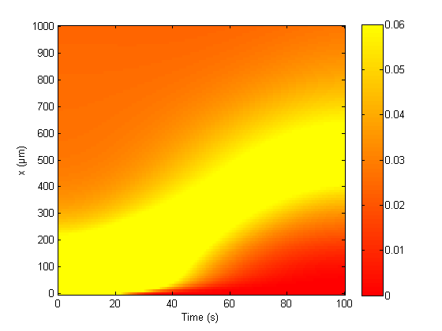

This is the readme for the model associated with the paper: Koon YL, Koh CG, Chiam KH (2014) Computational modeling reveals optimal strategy for kinase transport by microtubules to nerve terminals. PLoS One 9:e92437. This file was contributed by Yen Ling Koon. To start simply type the name of the matlab program at the matlab command line and within a minute you should see the models default simulated time evolved motion of active JNK (c-JUN NH2-terminal kinase) which corresponds to Figure 2(b) in the paper. 